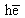
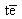
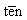
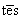
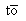
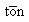

|
Cataloging reference
Initial
articles
Abbreviations
Months
End punctuation by MARC field
Form
subdivisions
Names
of Seasons
In
art/In literature
See also:
Diacritics
Vernacular designator
Romanization
tables (outside link)
|
Initial Articles
Introduction -- List of Initial Articles
Initial articles are normally deleted from certain
access points; when this is true, they are deleted whether in the nominative
case or in some case other than the nominative.
It is necessary to recognize initial articles, distinguishing them as
necessary from other words that happen to be spelled the same as articles
(cf. The English, Portuguese, etc., article "a" and the French, Italian,
etc., preposition "à" or "a"; or languages that use the same form both
for an indefinite article (comparable to English "a") and the number "one.")
Such words when not serving as initial articles are retained.
Also retained are plural indefinites, whether they have the form of
articles (Portuguese "umas," Spanish "unos," et.) Or not (English "some,"
French "des," Italian "qualche," etc.)
Below is a list of initial articles. For the details of this policy
as applied to bibliographic description and access points, see the following
LCRIs:
- LCRI 1.0, for bibliographic description
- LCRI 21.30J, for titles traced explicitly
- LCRI 21.30L, for series tracings
- LCRI 22.4, for personal names
- LCRI 23.2, for geographic names
- LCRI 26.1, for cross references
List of Initial Articles
| a |
English, Gallegan, Hungarian, Portuguese, Romanian, Scots, Yiddish |
a' |
Gaelic |
| al |
Romanian |
| al- |
Arabic, Baluchi, Brajui, Panjabi (Perso-Arabic script), Persian,
Turkish, Urdu (N.B. "al-" is meant to cover all the spellings in romanization,
e.g., "as"in "as-sijill") |
| am |
Gaelic |
| an |
English, Gaelic, Irish, Scots, Yiddish |
| an t- |
Gaelic, Irish |
| ane |
Scots |
| ang |
Tagalog |
| ang mga |
Tagalog |
| as |
Gallegan, Portuguese |
| az |
Hungarian |
| bat |
Basque |
| bir |
Turkish |
| d' |
English |
| da |
Shetland English |
| das |
German |
| de |
Danish, Dutch, English, Friesian, Norwegian, Swedish |
| dei |
Norwegian |
| dem |
German |
| den |
Danish, German, Norwegian, Swedish |
| der |
German, Yiddish |
| des |
German |
| det |
Danish, Norwegian, Swedish |
| di |
Yiddish |
| die |
Afrikaans, German, Yiddish |
| dos |
Yiddish |
| e |
Norwegian |
| ‘e |
Friesian |
| een |
Dutch |
| eene |
Dutch |
| egy |
Hungarian |
| ei |
Norwegian |
| ein |
German, Norwegian |
| eine |
German |
| einem |
German |
| einen |
German |
| einer |
German |
| eines |
German |
| eit |
Norwegian |
| el |
Catalan, Spanish |
| el- |
Arabic |
| els |
Catalan |
| en |
Catalan, Danish, Norwegian, Swedish |
| et |
Danish, Norwegian |
| ett |
Swedish |
| eyn |
Yiddish |
| eyne |
Yiddish |
| gl' |
Italian |
| gli |
Italian |
| ha- |
Hebrew |
| hai |
Classical Greek, Greek |
| he |
Hawaiian |
|  |
Classical Greek, Greek |
| he- |
Hebrew |
| heis |
Greek |
| hen |
Greek |
| hena |
Greek |
| henas |
Greek |
| het |
Dutch |
| hið |
Icelandic |
| hin |
Icelandic |
| hina |
Icelandic |
| hinar |
Icelandic |
| hinir |
Icelandic |
| hinn |
Icelandic |
| hinna |
Icelandic |
| hinnar |
Icelandic |
| hinni |
Icelandic |
| hins |
Icelandic |
| hinu |
Icelandic |
| hinum |
Icelandic |
| hi |
Icelandic |
| ho |
Classical Greek, Greek |
| ho- |
Hebrew |
| hoi |
Classical Greek, Greek |
| i |
Italian |
| ih' |
Provençal |
| il |
Italian, Provençal/Langue d'oc |
| il- |
Maltese |
| in |
Friesian |
| it |
Friesian |
| ka |
Hawaiian |
| kay |
Tagalog |
| ke |
Hawaiian |
| l' |
Catalan, French, Italian, Provençal/Langue d'oc |
| l- |
Maltese |
| la |
Catalan, Esperanto, French, Italian, Provençal/Langue d'oc, Spanish |
| las |
Provençal/Langue d'oc, Spanish |
| le |
French, Italian, Provençal/Langue d'oc |
| les |
Catalan, French, Provençal/Langue d'oc |
| lh |
Provençal/Langue d'oc |
| lhi |
Provençal/Langue d'oc |
| li |
Provençal/Langue d'oc |
| lis |
Provençal/Langue d'oc |
| lo |
Italian, Provençal/Langue d'oc, Spanish |
| los |
Provençal/Langue d'oc, Spanish |
| lou |
Provençal/Langue d'oc |
| lu |
Provençal/Langue d'oc |
| mga |
Tagalog |
 |
Tagalog |
| mia |
Greek |
| ‘n |
Afrikaans, Dutch, Friesian |
| na |
Gaelic, Hawaiian, Irish |
| na h- |
Gaelic, Irish |
| nang |
Tagalog |
| ni |
Tagalog |
| nina |
Tagalog |
| ‘o |
Neopolitan |
| o |
Gallegan, Hawaiian, Portuguese, Romanian |
| os |
Portuguese |
| ‘r |
Icelandic |
| ‘s |
German |
| sa |
Tagalog |
| sa mga |
Tagalog |
| si |
Tagalog |
| siná |
Tagalog |
| ‘t |
Dutch, Friesian |
| ta |
Classical Greek, Greek |
| tais |
Classical Greek |
| tas |
Classical Greek |
|  |
Classical Greek |
|  |
Classical Greek, Greek |
|  |
Classical Greek, Greek |
| the |
English |
| to |
Classical Greek, Greek |
|  |
Classical Greek |
| tois |
Classical Greek |
| ton |
Classical Greek, Greek |
|  |
Classical Greek, Greek |
| tou |
Classical Greek, Greek |
| um |
Portuguese |
| uma |
Portuguese |
| umas |
Portuguese |
| un |
Catalan, French, Italian Provençal/Langue d'oc, Romanian, Spanish |
| un' |
Italian |
| una |
Catalan, Italian, Provençal/Langue d'oc, Spanish |
| unas |
Spanish |
| une |
French |
| unei |
Romanian |
| unes |
Catalan |
| unha |
Gallegan |
| uno |
Italian, Provençal/Langue d'oc |
| unos |
Spanish |
| uns |
Provençal/Langue d'oc |
| unui |
Romanian |
| us |
Provençal/Langue d'oc |
| y |
Welsh |
| ye |
English |
| yr |
Welsh |
|